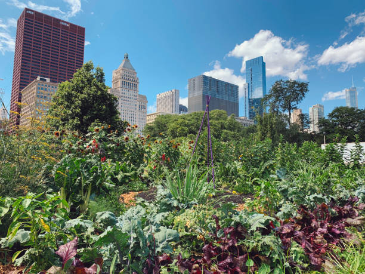

Guide Éducatif sur le Jardinage et la Durabilité
Retour
Introduction
Bienvenue dans notre guide éducatif sur le jardinage durable. Apprenez comment cultiver vos propres plantes tout en respectant l'environnement.
Les Bases du Jardinage
Pour commencer à jardiner, suivez ces étapes essentielles:
- Choisir le bon emplacement pour votre jardin.
- Préparer le sol avec des composts naturels.
- Sélectionner des plantes adaptées à votre climat.
Techniques de Jardinage Durable
Apprenez des techniques durables pour votre jardin:
- Utiliser des techniques de compostage pour enrichir le sol.
- Collecter et utiliser l'eau de pluie.
- Éviter les pesticides chimiques.

Ressources Supplémentaires
Pour en savoir plus sur le jardinage durable, consultez ces ressources: